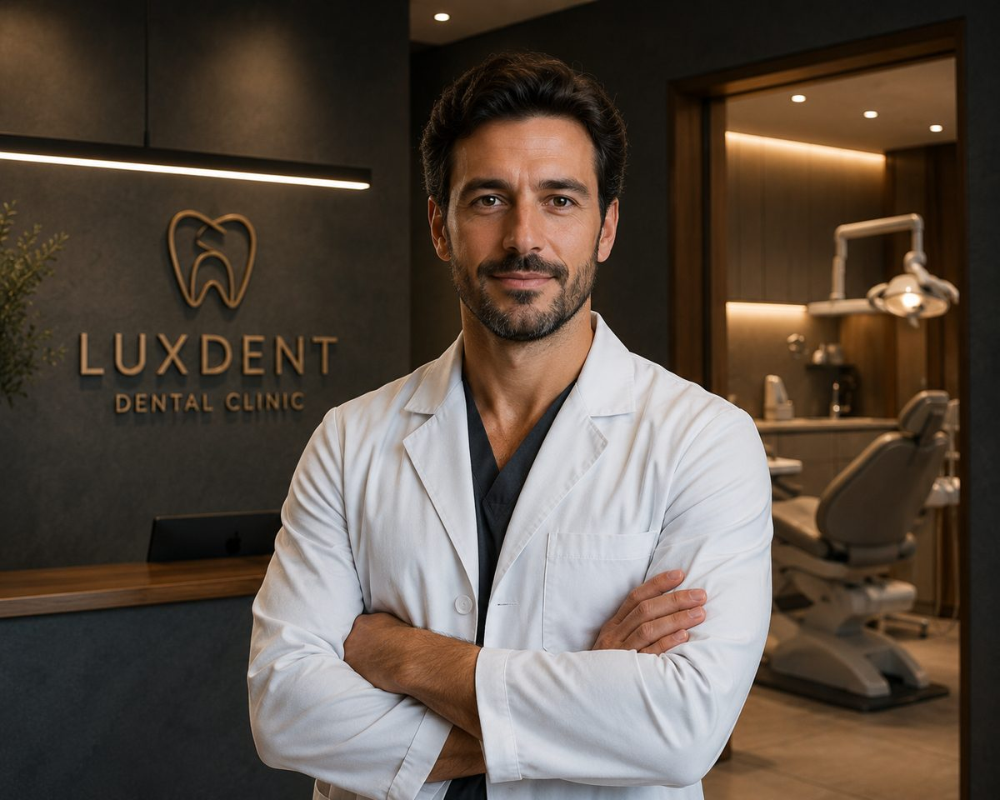
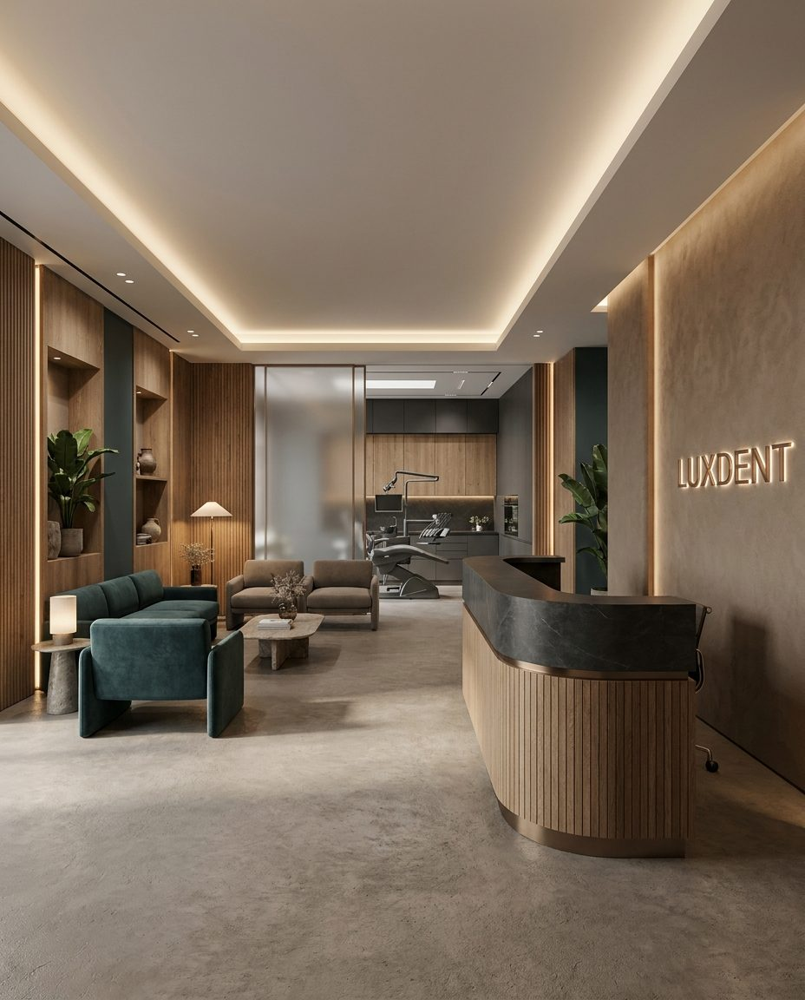
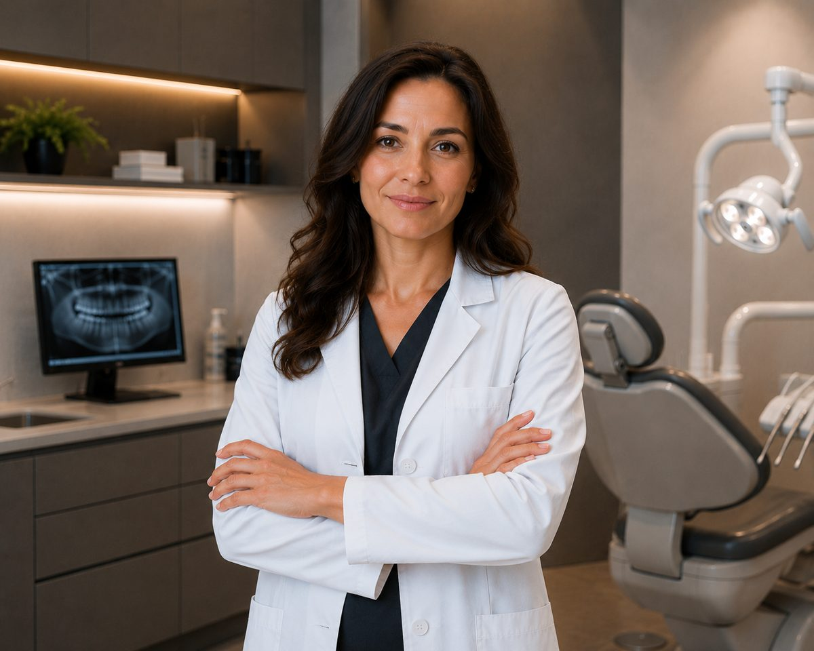
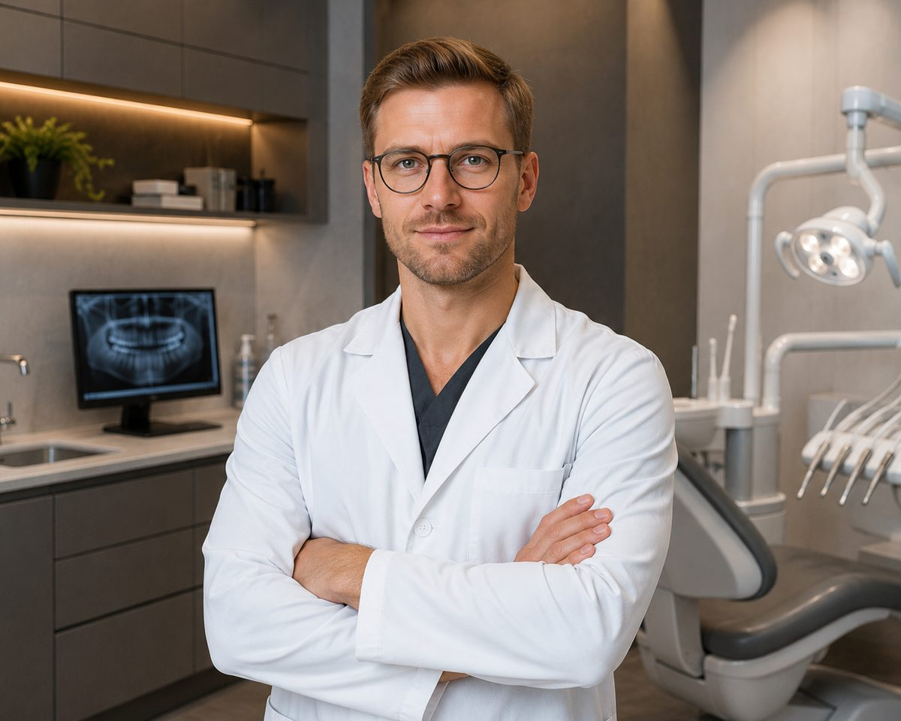
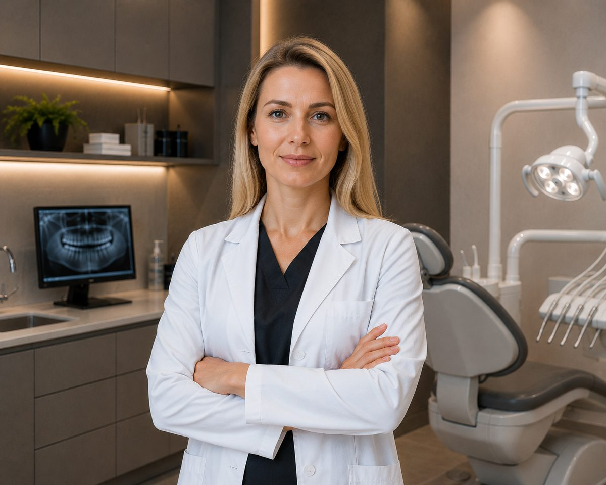

Kamil Zawadzki
Chirurg-implantolog, dr n. med.
14 lat · 2 100 implantów
Diagnostyka cyfrowa to jedna wizyta i 60 minut: tomografia, skan wewnątrzustny, fotoprotokół oraz plan leczenia ze stałą ceną na piśmie. Decyzję podejmujesz sam.
60 minut · 390 zł · plan leczenia zostaje u Ciebie, nawet jeśli będziesz leczyć się gdzie indziej

Świadomie nie robimy wszystkiego. Te cztery obszary prowadzimy w pełnym cyklu — od diagnostyki do kontroli po leczeniu.
Szablony nawigacyjne na podstawie tomografii, wszczepienie bez nacięcia, korona po 3–5 miesiącach. Prowadzimy bezzębie całkowite i podniesienie dna zatoki.
Cyfrowy projekt uśmiechu i przymiarka w jamie ustnej przed opracowaniem zębów. Ceramika E.max, własna frezarnia.
Przezroczyste nakładki z cyfrowym setupem: końcowe ustawienie zębów widzisz przed startem. Kontrola raz na 8 tygodni.
Skaling, piaskowanie, polerowanie i fluoryzacja w trakcie jednej wizyty. Potem przypomnienie raz na pół roku.
Masa wyciskowa, „mniej więcej w kość" i „zobaczymy w trakcie" — to nie u nas. Każdy krok jest policzony na modelu, zanim dotkniemy zęba.
Tomograf z warstwą 75 µm: gęstość kości, przebieg nerwów i korzeni. Pozycję implantu wyznacza punkt, nie oko chirurga.
Skaner wewnątrzustny zamiast wycisków — model idzie do planowania po 4 minutach. Efekt widzisz w 3D i zatwierdzasz przed rozpoczęciem.
Szablon chirurgiczny i korony frezujemy we własnej pracowni. Zabieg odtwarza zatwierdzony plan, a nie improwizuje.
Dziewięciu specjalistów, średnio 12 lat praktyki. Trudne przypadki omawiamy konsylium przed rozpoczęciem leczenia — chirurg, protetyk i ortodonta razem.




Zebrane z kart pacjentów i opublikowane za ich pisemną zgodą.
Podali termin czterech miesięcy i cenę — zgodziło się jedno i drugie. W stomatologii to nadal rzadkość.
Pokazali na ekranie, jak będą wyglądały zęby, przed jakimkolwiek szlifowaniem. Zgodziłam się dopiero, gdy zobaczyłam efekt.
Przyszedłem ze skierowaniem na ekstrakcję, wyszedłem z uratowanym zębem. Diagnostyka za 390 zł zmieniła cały plan.
Tomografia, skan wewnątrzustny, fotoprotokół i omówienie z lekarzem. Na wyjściu — plan leczenia ze stałą ceną, który zostaje u Ciebie.